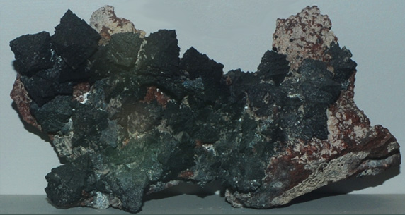

|  |
Mn3O4This sample of hausmannite is displayed in the Smithsonian Museum of Natural History. Hausmannite is an oxide mineral of manganese with the composition Mn3O4. This sample is about 14x7 cm and it is from N'Chwaning mine, Cape Province, South Africa . It is described as hausmannite with spessartine. |